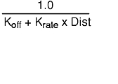

Now that you are familiar with the basic lighting capabilities of GL, the following sections discuss some of the advanced lighting features.
One property of surface materials is emissivity, the amount of light radiated (not reflected) by the material itself. A material can be made self-luminous by adding the identifier EMISSION to the property list followed by the red, green, and blue emission components (each with a value between 0.0 and 1.0). For example, we could define the properties list for a material as the following:
float glowing_material[] = {
EMISSION, 0.8, 0.25, 0.0,
AMBIENT, 0.0, 0.0, 0.0,
DIFFUSE, 0.0, 0.0, 0.0,
SPECULAR, 0.0, 0.0, 0.0,
LMNULL};
The material would appear to emit orange light. The ambient, diffuse, and specular reflectance values are specifically assigned to 0.0 so the color of the object is not affected by light sources. If the coefficients are not zeroed out, GL uses the default nonzero values.
Using a material definition such as glowing_material that has emissive but no reflective properties is useful for simulating lights at night. It is important to distinguish between the way the lighting facility handles surface materials with emissive properties and the way it handles light emitted from light sources. Unlike a light source, emitted light from a material does not affect the color of any other object.
In defining the simple lighting calculation, the default values for ambient light and ambient reflectance provided by GL were used. However, GL allows you to control the amount of ambient light displayed in the scene in three different ways:
You can specify the color of ambient light present in the entire scene. Because the color of ambient light is the same at any point in the scene, the scene ambient light color is a property of the lighting model. For example, in defining a lighting calculation with the lmdef subroutine using the property list, the lines
float simple_light_model[] =
{AMBIENT, 0.3, 0.3, 0.3, LMNULL};
define a lighting model similar to the simple lighting calculation except that this example overrides the default scene ambient light color with the specified values.
In addition to the scene ambient light color specified in the lighting model, a specific light source can contribute to the ambient light in the scene. Consider the following modification to the property array blue_light:
float blue_light[] =
{LCOLOR, 0.0, 0.0, 0.6,
AMBIENT, 0.0, 0.0, 0.2,
POSITION, 0.0, 1.0, 0.0, 0.0, LMNULL};
Now, the ambient light associated with blue_light is added to the scene ambient light once blue_light has been defined and bound. Unlike the scene ambient light, the ambient contribution from the blue light disappears if you turn the blue light off. It is important to note that ambient light associated with a particular light source is omnidirectional just like ambient light specified with the lighting model.
The third method of controlling displayed ambient color is to alter the ambient light reflectance values of the material. You have seen how to specify this property by using glowing_material (you set it to [0.0, 0.0, 0.0]). The ambient color displayed for a surface is determined by adding the ambient contributions from the light model and all of the light sources and multiplying the sum by the material's ambient light reflectance values.
You can also use the lmcolor subroutine to change the lighting components of an object while the program is running.
The lmcolor subroutine lets you change the properties of the currently bound material. It provides a high-performance path to the hardware that would not be otherwise available. Normally, to change the properties of the currently bound material, one would have to redefine the material with the lmdef subroutine and then rebind it with the lmbind subroutine. The lmcolor subroutine helps avoid some of the software overhead involved in redefinitions and rebindings.
The lmcolor subroutine works by redirecting the target of the RGB mode color subroutines (RGBcolor, c, and cpack). Normally, these subroutines set the current color. If lighting is off, the color subroutines can be made to affect material properties instead. The syntax is as follows:
void lmcolor(Int32 mode)
This function accepts the following values for mode:
Calls to the lmdef subroutine can change properties of the currently bound material, but because it must modify the data structure of the material, this subroutine executes relatively slowly. The lmcolor subroutine provides a fast and efficient way to change properties of the currently bound material as maintained in the graphics hardware without changing the definition of the material. This means, however, that all lmcolor changes are lost when you bind a new material.
Use the standard RGB-mode color subroutines RGBcolor, c, and cpack to change material properties selected by the lmcolor subroutine. When lighting is not active, RGB-mode color commands change the current drawing color. The lmcolor subroutine is significant only while lighting is on.
As stated in the section on pecularity, the intensity and color of the specular highlight seen depends on the view direction. The lighting calculations performed by the system take into account the view direction, although they can do so in one of two different ways. One of the methods, called infinite viewer, involves an approximation, but results in significantly improved performance. The other method, local viewer, is considerably slower, but more exact. For most applications, there is very little difference in the visual appearance between the two methods, and therefore the infinite viewer is the default.
The infinite viewer makes the approximation that the eye (as far as the lighting calculations are concerned) is infinitely far away. This does not mean that the transformation matrices are somehow altered; they are not. The geometry of the scene being drawn is completely unaffected; only the colors that come out of the lighting equations are affected.
When this assumption is made, the view direction vector remains constant throughout the scene. Using an infinite viewer is beneficial to application performance because the system does not have to recompute the view direction vector for every vertex in the scene (recomputing this vector is computationally expensive because it requires a square root operation).
However, describing the viewer as located infinitely far away is not as realistic as placing the viewer at some finite position. To define a local viewer, set the local viewer property in the property list for the lighting model to true (1.0):
float local_viewer_model[] = {LOCALVIEWER, 1.0, LMNULL};
Note: Because the local view vector changes with each vertex, the lighting computation must be performed when the vertex subroutine (v3f) rather than the normal (n3f ) subroutine is issued. When performing the lighting calculation at the vertex, the graphics hardware uses the normal vector from the most recently issued normal subroutine.
The difference between infinite and local viewer is significant only when the surface being drawn is extremely close to the eye. For normal drawing, the performance improvement of the infinite viewer should significantly outweigh the improved appearance of the local viewer.
Local lights are analogous to a local viewer and are available through the lighting facility. To convert the blue light from the earlier example to a local light, change the property list definition to the following:
float blue_light[] = {
LCOLOR, 0.0, 0.0, 0.6,
POSITION, 0.0, 5.0, 0.0, 1.0, LMNULL};
Changing the fourth positional component from a 0.0 to a 1.0 tells the system that this light is local and that the x, y, and z components specify a light position rather than a light direction. This is a significant difference because the light direction vector becomes the vector from the current vertex to the position of the light. Thus, you must take care not to position the light too close to the surface. If you are not careful, you may find that you positioned the light source within or below a surface in your scene (notice the y component of the position is changed from a 1.0 to 5.0 in the property list for blue_light). Like a local viewer computation, the lighting computation is performed when a vertex subroutine is issued when you are using a local light.
Using a local viewer or local lights, or both, makes a significant visual difference when you are displaying geometry that contains flat surfaces. The normal vector across a flat surface is constant. Thus, if you are using infinite light sources and an infinite viewer, the angular relationships between the normal, view, and light vectors remain constant, resulting in a constant color across the surface. Using a local viewer or lights, or both, causes the view or light vectors, or both, and the resultant color to change across the flat surface. (See the example program platelocal.c (in in GL3.2 Version 4 for AIX: Graphics Library (GL) Technical Reference .)
As you move a light further away from an object, the effect of the light on the object diminishes. This is referred to as light attenuation. If you are using local lights in your lighting model, the lighting facility will attenuate them if desired. The amount of attenuation is a function of the distance from the current vertex to the light source. Because the attenuation function used is the same for all local lights, the attenuation function is a property of the light model rather than of a particular light. The attenuation function used is as follows:
where Koff equals the constant scene attenuation factor, fixed; Krate equals the scene attenuation rate; and Dist equals the distance from current vertex to light source.
The constant scene attenuation factor sets the minimum attenuation that a light will undergo. It should be set to a value greater than zero. The attenuation rate controls how fast the attenuation sets in as a light is moved away. It should not be set to a negative value. The resulting attenuation factor computed at a vertex is clipped to [0.0, 1.0] and is multiplied with the light source color in order to attenuate it.
To specify attenuation in the light model property list, specify the constant attenuation parameter followed by the attenuation rate parameter:
float local_light_model[] = {AMBIENT, 0.3, 0.3, 0.3,
LOCALVIEWER, 1.0,
ATTENUATION, 1.0, 1.5, LMNULL};
The fixed scene attenuation factor dampens the overall attenuation function. By increasing the value of the fixed attenuation factor, you lessen the effect of the distance-dependent attenuation. It is a good idea to start off with the fixed attenuation factor equal to 1.0. That way, when the distance from the vertex to the light is zero, there is no attenuation. Furthermore, if you make the attenuation rate factor large, the illumination falls off too quickly.
There are two reasons why the formula shown is used for attenuation, rather than some different form (for example, an inverse square law):